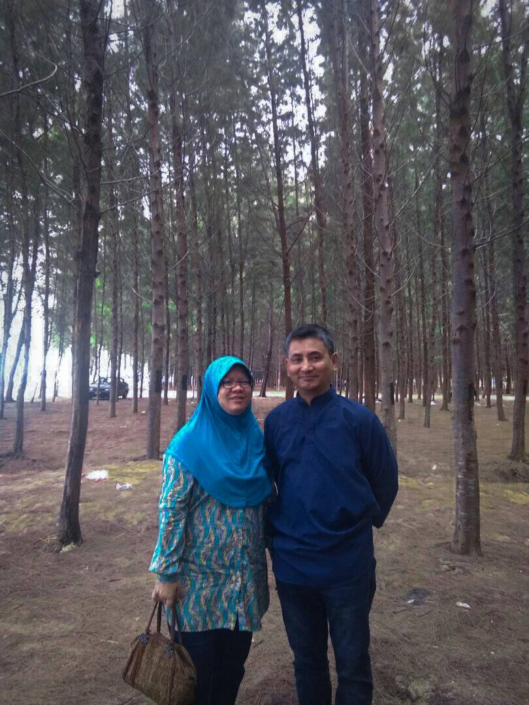
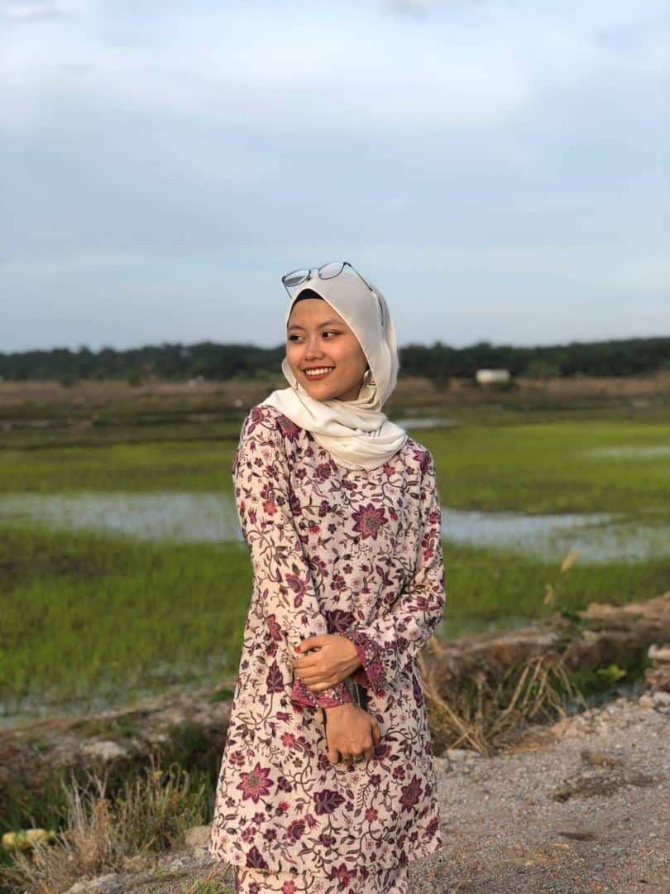
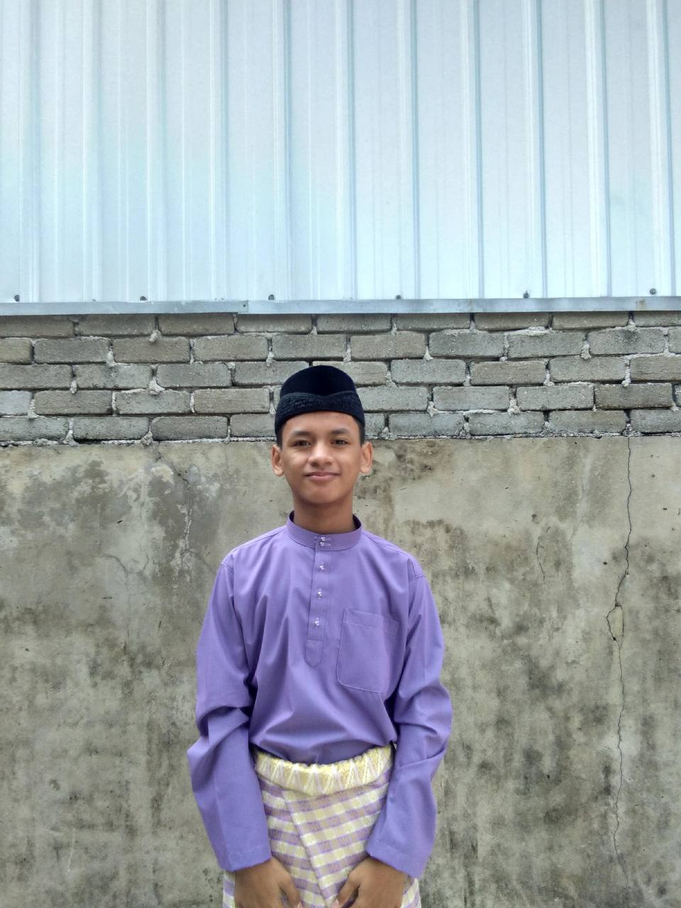

My Family


The name given was Nik Razif Bin Nik Mohamed Ariffin. A wonderful parent to his children, whom I named "Papa". He is really compassionate and committed to things linked to his life..
Meanwhile, Azida Binti Mohd Noor is such a pretty woman that I referred to her as "mom". Everything about her is ideal. She is an outstanding person that someone who always amazes me with how fantastic they are as a human being.


The oldest child in this family is Nik Batrisha Binti Nik Razif, whom I called "Kakak." She is presently employed and has not married.
yes! This is me. I'm the second child in this family. I am 21 years old and now enrolled in the Information Management programme at UiTM Rembau.

My younger brother is here. Nik Afandi Bin Nik Razif is his name. He started working part-time at Puma after finishing his SPM.